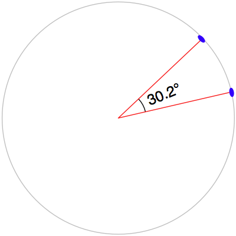

执行地理空间计算#
Performing geospatial calculations
Shapely 是一个非常强大的库，可以对地理空间数据执行各种计算。让我们用一个复杂的现实问题来测试一下它的性能。
Shapely is a very capable library for performing various calculations on geospatial data. Let’s put it through its paces with a complex, real-world problem.
任务 – 识别市区内或附近的公园#
Task – identify parks in or near urban areas
美国人口普查局提供了一个包含 核心统计区（CBSAs） 的 shapefile，这些多边形定义了人口为 10,000 或以上的城市区域。同时，GNIS 网站提供了地点名称和其他详细信息。通过这两个数据源，我们将识别任何位于或靠近城市区域的公园。
由于我们处理的数据量较大，我们将搜索范围限制为加利福尼亚州。检查整个美国所有 CBSA 多边形/地点名称组合将需要很长时间；虽然可以优化程序以更快速地完成，但这样会使示例变得过于复杂，不符合当前的目的。我们从下载所需数据开始。访问 TIGER 网站：
http://census.gov/geo/www/tiger
点击 TIGER/Line Shapefiles 链接，然后按照下载选项下载最新版本的 TIGER/Line shapefiles（截至本书编写时，是 2012 版本）。选择 Web Interface 选项，并从弹出菜单中选择 Core Based Statistical Areas。你需要的 shapefile 叫做 Metropolitan/Micropolitan Statistical Area；点击此按钮下载整个美国的 CBSA 数据。
你下载的文件名类似于 tl_XXXX_us_cbsa.zip，其中 XXXX 是你下载的数据年份。下载文件后，解压缩它，并将生成的 shapefile 放在一个方便的位置，以便使用。
接下来，你需要下载 GNIS 地点名称数据。访问 GNIS 网站：
http://geonames.usgs.gov/domestic
点击 Download Domestic Names 超链接，然后选择下载所有国家特征的一个 .zip 文件的选项。生成的文件名为 NationalFile_XXX.zip，其中 XXX 是日期戳。解压 ZIP 存档，并将生成的 .txt 文件放在一个方便的位置。
现在我们可以开始编写代码了。首先，我们将读取 CBSA 城市区域 shapefile，并提取定义每个城市区域边界的多边形：
shapefile = ogr.Open("tl_2009_06_cbsa.shp")
layer = shapefile.GetLayer(0)
for i in range(layer.GetFeatureCount()):
feature = layer.GetFeature(i)
geometry = feature.GetGeometryRef()
使用我们在前面部分学到的内容，我们可以将几何形状转换为 Shapely 对象，以便进行操作：
wkt = geometry.ExportToWkt()
shape = shapely.wkt.loads(wkt)
接下来，我们需要扫描 NationalFile_XXX.txt 文件，以识别标记为公园的特征。如前所述，这个文件太大，无法完全处理；因此，我们将仅提取加利福尼亚州的特征。对于这些特征，我们希望提取特征名称及其关联的纬度和经度。下面是我们可以做到这一点的方式：
f = file("NationalFile_XXX.txt", "r")
for line in f.readlines():
chunks = line.rstrip().split("|")
if chunks[2] == "Park" and chunks[3] == "CA":
name = chunks[1]
latitude = float(chunks[9])
longitude = float(chunks[10])
请记住，GNIS 地点名称数据库是一个“管道分隔”文本文件。这就是我们必须使用 line.rstrip().split(“|”) 来拆分每一行的原因。
接下来是有趣的部分：我们需要弄清楚哪些公园位于或靠近每个城市区域。有两种方式可以实现这一目标，其中任何一种都可以工作：
我们可以使用 shape.distance() 方法计算形状与表示公园位置的 Point 对象之间的距离：
{kind=link}
我们可以使用 shape.buffer() 方法对多边形进行 膨胀 ，然后查看生成的多边形是否包含所需的点：
{kind=link}
第二个选项在处理大量点时更快，因为我们可以预计算膨胀后的多边形，然后将它们与每个点逐一进行比较。我们选择这个方法：
# findNearbyParks.py
from osgeo import ogr
import shapely.geometry
import shapely.wkt
MAX_DISTANCE = 0.1 # 角度距离；大约 10 公里。
print "加载城市区域..."
urbanAreas = {} # 将区域名称映射到 Shapely 多边形。
shapefile = ogr.Open("tl_2012_us_cbsa.shp")
layer = shapefile.GetLayer(0)
for i in range(layer.GetFeatureCount()):
feature = layer.GetFeature(i)
name = feature.GetField("NAME")
geometry = feature.GetGeometryRef()
shape = shapely.wkt.loads(geometry.ExportToWkt())
dilatedShape = shape.buffer(MAX_DISTANCE)
urbanAreas[name] = dilatedShape
print "检查公园..."
f = file("NationalFile_XXX.txt", "r")
for line in f.readlines():
chunks = line.rstrip().split("|")
if chunks[2] == "Park" and chunks[3] == "CA":
parkName = chunks[1]
latitude = float(chunks[9])
longitude = float(chunks[10])
pt = shapely.geometry.Point(longitude, latitude)
for urbanName, urbanArea in urbanAreas.items():
if urbanArea.contains(pt):
print parkName + " 位于或靠近 " + urbanName
f.close()
备注
别忘了更改 NationalFile_XXX.txt 文件的名称，以匹配你下载的实际文件。如果你将这些文件存储在其他目录中，可以在程序中为 tl_2012_us_cbsa.shp 和 NationalFile_XXX.txt 文件指定路径。
请注意，我们的程序使用 角度距离 来判断一个公园是否位于或靠近给定的城市区域。如在 第二章，GIS 中提到，角度距离是从地球中心到地球表面两条直线之间的角度：
{kind=link}
因为我们处理的是加利福尼亚州的数据，在这里 1 度角度大约等于地球表面 100 公里，因此 0.1 度大约等于 10 公里。
使用角度测量法使得距离计算变得简单且快速，尽管它并不能提供地球表面上的确切距离。如果你的应用程序要求精确的距离，你可以先使用角度距离过滤掉明显太远的特征，然后通过计算多边形边界上离目标点最近的点来获得确切的结果，再计算两点之间的线性距离。对于超出你所需精确线性距离的点，可以将其丢弃。实现这一点将是一个有趣的挑战，尽管这本书并不会探讨这一内容。
The US Census Bureau make available a shapefile containing something called Core Based Statistical Areas (CBSAs), which are polygons defining urban areas with a population of 10,000 or more. At the same time, the GNIS website provides lists of place names and other details. Using these two data sources, we will identify any parks within or close to an urban area.
Because of the volume of data we are dealing with, we will limit our search to California. It would take a very long time to check all the CBSA polygon/place name combinations for the entire United States; it’s possible to optimize the program to do this quickly, but this would make the example too complex for our current purposes. Let’s start by downloading the necessary data. Go to the TIGER website:
http://census.gov/geo/www/tiger
Click on the TIGER/Line Shapefiles link, then follow the Download option for the latest version of the TIGER/Link shapefiles (as of this writing, this is the 2012 version). Select the Web Interface option, and choose Core Based Statistical Areas from the pop-up menu. The shapefile you want is called Metropolitan/Micropolitan Statistical Area; click on this button to download the CBSA data for the entire USA.
The file you download will have a name similar to tl_XXXX_us_cbsa.zip, where XXXX is the year of the data you’ve downloaded. Once the file has downloaded, decompress it and place the resulting shapefile into a convenient location so that you can work with it.
You now need to download the GNIS place name data. Go to the GNIS website:
http://geonames.usgs.gov/domestic
Click on the Download Domestic Names hyperlink, and then choose the option download all national features in one .zip file. The resulting file will be named NationalFile_XXX.zip, where XXX is a date stamp. Decompress the ZIP archive, and place the resulting .txt file in a convenient place.
We’re now ready to write the code. Let’s start by reading through the CBSA urban area shapefile and extracting the polygons that define the boundary of each urban area:
shapefile = ogr.Open("tl_2009_06_cbsa.shp")
layer = shapefile.GetLayer(0)
for i in range(layer.GetFeatureCount()):
feature = layer.GetFeature(i)
geometry = feature.GetGeometryRef()
Using what we learned in the previous section, we can convert this geometry into a Shapely object so that we can work with it:
wkt = geometry.ExportToWkt()
shape = shapely.wkt.loads(wkt)
Next, we need to scan through the NationalFile_XXX.txt file to identify the features marked as a park. As we mentioned earlier, this file is too large for us to process in its entirety; instead we’ll just extract the features for California. For each of these features, we want to extract the name of the feature and its associated latitude and longitude. Here’s how we might do this:
f = file("NationalFile_XXX.txt", "r")
for line in f.readlines():
chunks = line.rstrip().split("|")
if chunks[2] == "Park" and chunks[3] == "CA":
name = chunks[1]
latitude = float(chunks[9])
longitude = float(chunks[10])
Remember that the GNIS place name database is a “pipe-delimited” text file. That’s why we have to split the line up using line.rstrip().split(“|”).
Now comes the fun part: we need to figure out which parks are within or close to each urban area. There are two ways we could do this, either of which will work:
We could use the shape.distance() method to calculate the distance between the shape and a Point object representing the park’s location:
We could dilate the polygon using the shape.buffer() method, and then see if the resulting polygon contained the desired point:
The second option is faster when dealing with a large number of points, as we can precalculate the dilated polygons and then use them to compare against each point in turn. Let’s take this option:
# findNearbyParks.py
from osgeo import ogr
import shapely.geometry
import shapely.wkt
MAX_DISTANCE = 0.1 # Angular distance; approx 10 km.
print "Loading urban areas..."
urbanAreas = {} # Maps area name to Shapely polygon.
shapefile = ogr.Open("tl_2012_us_cbsa.shp")
layer = shapefile.GetLayer(0)
for i in range(layer.GetFeatureCount()):
feature = layer.GetFeature(i)
name = feature.GetField("NAME")
geometry = feature.GetGeometryRef()
shape = shapely.wkt.loads(geometry.ExportToWkt())
dilatedShape = shape.buffer(MAX_DISTANCE)
urbanAreas[name] = dilatedShape
print "Checking parks..."
f = file("NationalFile_XXX.txt", "r")
for line in f.readlines():
chunks = line.rstrip().split("|")
if chunks[2] == "Park" and chunks[3] == "CA":
parkName = chunks[1]
latitude = float(chunks[9])
longitude = float(chunks[10])
pt = shapely.geometry.Point(longitude, latitude)
for urbanName,urbanArea in urbanAreas.items():
if urbanArea.contains(pt):
print parkName + " is in or near " + urbanName
f.close()
备注
Don’t forget to change the name of the NationalFile_XXX.txt file to match the actual name of the file you downloaded. You may also add a path of the references to tl_2012_us_cbsa.shp and NationalFile_XXX.txt in your program if you placed these in a different directory.
Note that our program uses angular distances to decide if a park is in or near a given urban area. As we mentioned in Chapter 2, GIS, an angular distance is the angle between two lines going out from the center of the Earth to the Earth’s surface:
Because we are dealing with data for California, where one degree of angular measurement roughly equals 100 kilometers on the Earth’s surface, an angular measurement of 0.1 roughly equals a real distance of 10 km.
Using angular measurements makes the distance calculation easy and quick to calculate, though it doesn’t give an exact distance on the Earth’s surface. If your application requires exact distances, you could start by using an angular distance to filter out the features obviously too far away, and then obtain an exact result for the remaining features by calculating the point on the polygon’s boundary that is closest to the desired point, and then calculating the linear distance between the two points. You would then discard the points that exceed your desired exact linear distance. Implementing this would be an interesting challenge, though not one we will examine in this book.